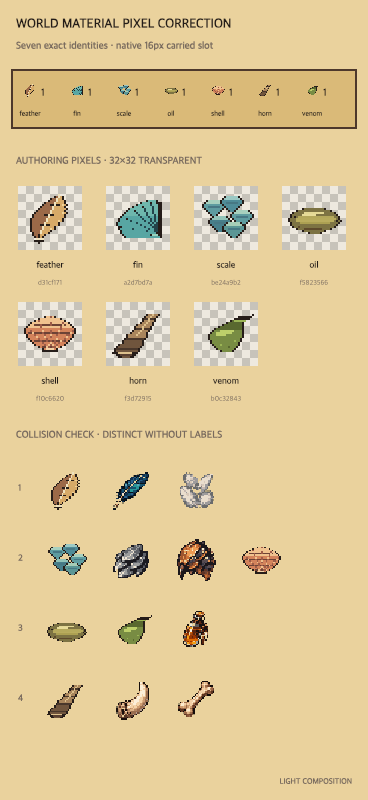
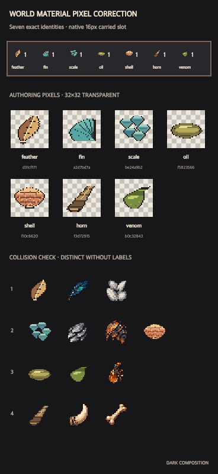
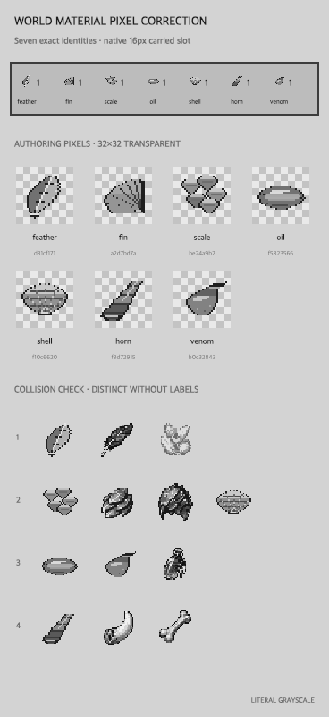

Corrected candidate · not Aimee-approved · integrationReady:false
Exact 32×32 generated identities for Feather, Fin, Scale, Oil, Shell, Horn and Venom, shown in the World carried strip’s native 16×16 slot and beside collision-prone existing families. Existing material bytes, World header and Seamward composition remain unchanged.


